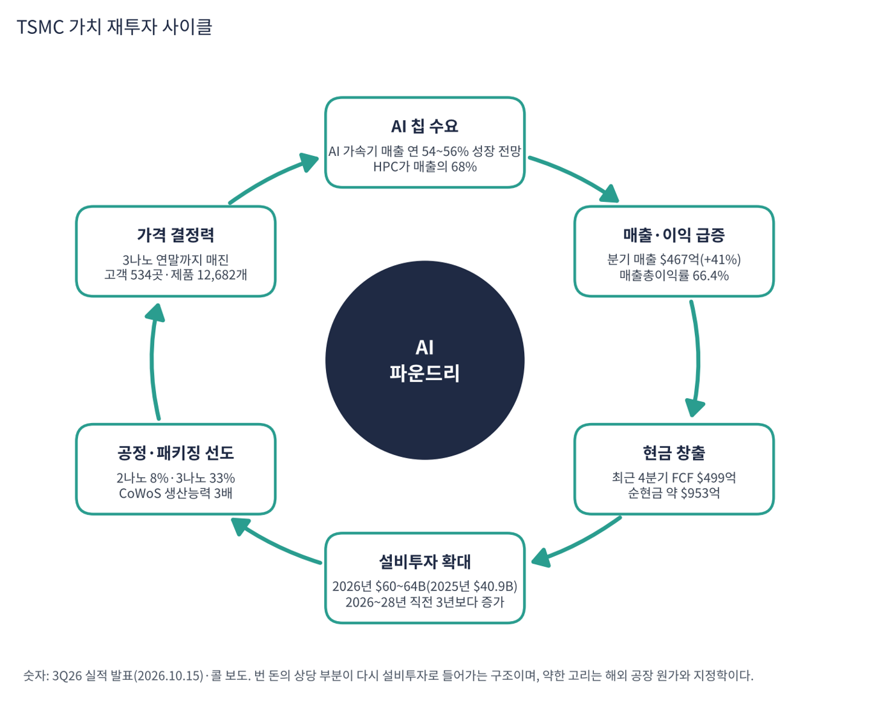

TSMC는 고객이 설계한 칩을 대신 만들어 주는 세계 1위 파운드리다. 엔비디아 GPU, 애플 아이폰 칩, AMD CPU·GPU, 브로드컴·마벨의 맞춤형 AI 칩, 구글 TPU가 모두 TSMC 공장에서 나온다. 2025년에는 534개 고객에게 12,682개 제품을 생산했다. 직접 칩을 설계하지 않아 고객과 경쟁하지 않는 것이 원칙이다.
| 항목 | 내용 |
|---|---|
| 종목 | Taiwan Semiconductor Manufacturing Co. (TSM ADR / 2330.TW) · 반도체 위탁생산 · 1987년 설립 · 본사 대만 신주 (1 ADR = 보통주 5주) |
| 시가총액 | 약 $1.63조 · TTM PER 24.2배 (트레이딩뷰, 11/6 종가 ADR $375.44) |
| 최근 분기(3Q26) | 매출 $46.72B(+41%), 매출총이익률 66.4%, 영업이익률 58.7%, 순이익 NT$763.1B(+68.7%), ADR당 EPS $4.60 |
| 다음 분기 가이던스 | 4Q26 매출 $52.3~54.3B(전년 대비 약 +58%), 매출총이익률 65~67%, 영업이익률 56.5~58.5% |
| 설비투자 | 2026년 $60~64B (7월에 $52~56B에서 상향, 2025년 $40.9B) |
| 다음 실적 | 4Q26: 2027년 1월 중순 발표 예정 (월매출은 매월 10일경 공개) |
| 직책 | 인물 | 역할·특징 |
|---|---|---|
| 회장 겸 CEO | C.C. 웨이 | 2018년 회장 취임. "AI는 진짜이고 일상으로 들어오고 있다", "AI 수요가 3개월 전 생각보다 더 강하다"를 반복(보도). 고객 전체의 주문을 보는 위치에서 수요를 판단 |
| CFO | 웬델 황 | 3Q26 실적에서 "4분기에도 2나노의 가파른 램프업을 포함해 강한 수요가 이어질 것", 2026~2028년 설비투자는 직전 3년보다 많을 것이라고 설명 |
경영 스타일: '고객과 경쟁하지 않고, 수요를 확인한 뒤 공급을 확장한다'. 웨이는 몇 달간 고객과 고객의 고객을 만나 AI 수요가 실재하는지 확인했다고 밝혔다. 이후 AI 가속기 매출 연평균 성장 전망을 40%대 중반에서 54~56%로 올렸고 설비투자를 $52~56B에서 $60~64B로 올렸다. 숫자를 조심스럽게 말하다가 확신이 서면 크게 올리는 방식이다.
2나노(N2)는 2025년 말 양산을 시작해 3분기 웨이퍼 매출의 8%까지 올라왔다. 다음 세대는 A16(후면 전력 공급)·A14다. AI 칩과 HBM을 묶는 CoWoS 패키징은 수요가 연 80% 늘어 생산능력을 3배로 늘리는 중이다.
경쟁사(삼성·인텔)보다 1~2세대 앞선 공정을 가장 높은 수율로 공급하고, 미국(애리조나·텍사스)·일본·독일로 공장을 넓혀 지정학과 관세 위험에 대응한다.
| 분기 | 매출(US$) | YoY | 매출총이익률 | 영업이익률 | 순이익(NT$) | 공정 비중 |
|---|---|---|---|---|---|---|
| 2024.4Q | $26.9B | +37% | 59.0% | 49.0% | NT$374.7B | – |
| 2025.1Q | $25.5B | +35% | 58.8% | 48.5% | NT$361.6B | – |
| 2025.2Q | $30.1B | +44% | 58.6% | 49.6% | NT$398.3B | – |
| 2025.3Q | $33.1B | +41% | 59.5% | 50.6% | NT$452.3B | – |
| 2025.4Q | $33.7B | +25% | 62.3% | 54.0% | NT$505.7B | 3nm 28% / 5nm 35% / 7nm 14% |
| 2026.1Q | $35.9B | +41% | 66.2% | 58.1% | NT$572.5B | 3nm 25% / 5nm 36% / 7nm 13% |
| 2026.2Q | $40.2B | +34% | 67.7% | 60.3% | NT$706.6B | 2nm 3% |
| 2026.3Q | $46.7B | +41% | 66.4% | 58.7% | NT$763.1B | 2nm 8% · 3nm 33% / 5nm 28% / 7nm 10% |

흐름 요약: 분기 매출이 $26.9B에서 $46.7B로 1.7배가 됐다. 매출총이익률은 2025년 상반기 58~59%에서 2026년 66~68%로 올랐다. 3나노·5나노 공장이 꽉 차 있고 AI 칩 수요가 넘쳐 가격 협상력이 커졌기 때문이다. 3분기에는 2나노 초기 양산 원가로 1.3%p 낮아졌지만 가이던스(65~67%) 중간 위였다. 순이익은 매출보다 빨리 늘어 3Q26 매출이 +51%(NT$ 기준)일 때 순이익이 +68.7%였고 6개 분기 연속 사상 최대다.
| 구분 | 내용 | 3Q26 비중 |
|---|---|---|
| 2나노 (N2) | 2025년 말 양산 시작한 최신 공정. 웨이퍼 단가가 가장 비싸고, 초기에는 원가가 높아 이익률을 낮춘다 | 8% (2분기 3%) |
| 3나노 (N3) | 애플 A·M 시리즈, 엔비디아 베라 루빈 세대, AMD MI450 등. 연말까지 매진 | 33% |
| 5나노 (N5/N4) | 엔비디아 블랙웰, 다수의 AI 가속기·스마트폰 칩 | 28% |
| 7나노 (N7) | 네트워크·일부 AI·자동차 | 10% |
| 응용처: HPC | AI 가속기·서버 CPU·네트워크 칩 | 매출의 68% |

TSMC는 웨이퍼를 팔아 돈을 번다. 몇 년 전까지 최대 고객군은 스마트폰이었지만 지금은 HPC(AI·서버)가 68%다. AI 가속기만으로 2025년 웨이퍼 매출의 17~19%를 차지했다(1월 콜 보도). 7나노 이하 첨단 공정이 79%이고 3나노와 2나노 비중이 합쳐 41%로 올라 평균 웨이퍼 단가도 계속 오른다. 고객별 매출 비중(엔비디아·애플 등)은 공개되지 않는다.
TSMC의 원칙은 창업 이래 같다. "고객과 경쟁하지 않는다." 직접 칩을 설계하지 않기 때문에 엔비디아·AMD·애플·구글이 모두 안심하고 가장 중요한 칩을 맡긴다. 이 신뢰 위에 세 가지 목표를 쌓고 있다.
| 목표 | 내용 |
|---|---|
| 기술 리더십 | 2나노 '가파른 램프업', 다음 세대 A16·A14. 삼성·인텔보다 1~2세대 앞선 공정을 가장 높은 수율로 공급 |
| 첨단 패키징 | AI 칩과 HBM을 묶는 CoWoS. 수요 연 80% 증가, 생산능력 3배 확대. 매출의 약 10%지만 AI 칩 출하의 병목 |
| 글로벌 생산 | 미국 애리조나·텍사스, 일본, 독일 공장으로 지정학 위험과 관세에 대응. 해외 공장은 원가가 높아 이익률을 깎음 |


위: 트레이딩뷰 주봉 데이터로 재구성(10·20·40주선). 아래: 트레이딩뷰 공개 차트 일봉 캡처(작도 숨김, 이동평균선·볼린저밴드만 표시).
| 이동평균 | 값 | 종가 대비 | 해석 |
|---|---|---|---|
| 5일선 | $385.54 | -2.6% | 11/5 -10.8% 급락, 11/6 +6.3% 반등 |
| 20일선 | $416.44 | -9.8% | 10월 중순 이후 하락 |
| 50일선 | $431.64 | -13.0% | 8~10월 상승 추세의 중심 |
| 100일선 | $427.68 | -12.2% | 50일선과 겹침, $416~432 저항대 |
| 200일선 | $401.48 | -6.5% | 11월 첫 주 이탈, 여전히 우상향 |
배열은 50일 > 100일 > 20일 > 200일 > 5일 > 주가다. 2025년 11월 저점($267)에서 2026년 10월 고점($487)까지 +83% 올랐고 10월 둘째 주부터 조정에 들어갔다. 11월 첫 주 장중 $351까지 밀렸는데 이는 1년 상승폭의 피보나치 61.8%($351.1)와 정확히 같은 가격이다. 거래량은 20일 평균의 170%였다.
| 규칙 | 기준 | 현재 값 | 신호 |
|---|---|---|---|
| 장기 추세 필터 | 종가 vs 200일선 | $375.44 < $401.48 | 매도 |
| 중장기 교차 | 50일선 vs 200일선 | $431.64 > $401.48 | 매수 |
| 단기 교차 | 20일선 vs 50일선 | $416.44 < $431.64 | 매도 |
| 돈키언 채널 | 55일 고가 $487.47 / 저가 $351.19 | 중간값 $419.33 아래 | 매도 |
| 1개월 모멘텀 | 21거래일 수익률 | -18.0% (기준 $457.99) | 매도 |
| 3개월 모멘텀 | 63거래일 수익률 | -10.3% (기준 $418.47) | 매도 |
| 6개월 모멘텀 | 126거래일 수익률 | -8.8% (기준 $411.68) | 매도 |
| 12개월 모멘텀 | 252거래일 수익률 | +27.9% (기준 $293.64) | 매수 |
| 종합 (8개 평균) | -0.50 | 매도 우위 |
해석: 메모리·AI 칩 종목과 같은 -0.50이지만 질이 다르다. 3개월(-10%)·6개월(-9%) 모멘텀 낙폭이 작고 기준가($412~419)와 200일선($401)이 현재가에서 7~12% 위에 모여 있다. $420까지 회복하면 신호 4개가 동시에 매수로 돌아선다. 14일 ATR $17.49 (4.7%).
| 가격 | 무엇이 바뀌나 | 의미 |
|---|---|---|
| $401 | 200일선 | 장기 추세 필터 매수 전환 (-0.50 → -0.25) |
| $412 ~ 419 | 6개월·3개월 기준가 | 종합 점수 플러스 전환 |
| $432 | 50일선 | 단기 교차 회복 가능 구간 |
| $351 이탈 | 피보나치 61.8% 붕괴 | 3월 박스($314~350)로 회귀 |
| 구분 | 가격대 | 근거 |
|---|---|---|
| 저항 2 | $416 ~ 432 | 20·50·100일선 |
| 저항 1 | $385 ~ 401 | 5일선, 200일선 |
| 지지 1 | $351 | 11/5 저점 = 피보나치 61.8% |
| 지지 2 | $314 ~ 340 | 2026년 3월 박스, 피보나치 78.6%($314) |
AI 공급망의 '필수재'가 업종 급락에 함께 끌려 내려온 구간이다. 피보나치 61.8%에서 반등을 활용한 분할 매수가 손익비가 가장 좋은 종목으로 본다. $365~376에서 계획 비중의 30%, $351~358에서 20%를 진입하고(평균 $364·손절 $338 기준 손익비 1:1.4~1:2.6), $401 종가 회복 시 나머지 50%를 추가하며 손절을 $375로 올린다. 1차 $401에서 40%, 2차 $432에서 40% 익절하고 나머지는 $487 재도전 여부로 판단한다. $351 종가 이탈 시 비중을 줄이고 $338에서 손절한다.
| 악재 요인 | 내용 | 강도 |
|---|---|---|
| 지정학 | 대만 해협 긴장, 미중 기술 분쟁. 생산의 대부분이 대만에 있음 | 높음 |
| 관세·규제 | 미국 반도체 관세, 수출 통제 | 중간 |
| 이익률 희석 | 2나노 초기 원가, 해외 공장, 설비투자 급증에 따른 감가상각 | 중간 |
| AI 사이클 | AI 투자가 꺾이면 HPC 68%가 그대로 노출 | 중간 |
| 스마트폰 수요 | 메모리 가격 급등으로 스마트폰 수요 둔화(삼성 중저가 모델 감산 보도) | 참고 |
| 경쟁 | 삼성 2나노·테일러 팹, 인텔 파운드리. 아직은 격차가 큼 | 낮음 |
| 티커 | 회사 | 시가총액 | PER(TTM) | PEG | P/S | EPS 성장(YoY) |
|---|---|---|---|---|---|---|
| TSM | TSMC | $1,630B | 24.2배 | 0.39 | 12.03배 | +59% |
| NVDA | 엔비디아 | $4,498B | 23.6배 | 0.20 | 15.63배 | +125% |
| AVGO | 브로드컴 | $1,402B | 37.5배 | 0.34 | 14.81배 | +100% |
| AMD | AMD | $736B | 97.6배 | 0.68 | 14.50배 | +127% |
| MRVL | 마벨 | $124B | 46.5배 | – | 12.57배 | – |
| QCOM | 퀄컴 | $177B | 13.0배 | 0.08 | 3.97배 | +160% |
EPS 성장률은 트레이딩뷰 TTM 값이다. 마벨은 직전 연도 기저로 산출되지 않는다.
비교 결론: TSMC PER 24.2배는 AMD(97.6배)·마벨(46.5배)·브로드컴(37.5배)보다 낮고 엔비디아(23.6배)와 비슷하다. PEG 0.39는 엔비디아(0.20)·퀄컴(0.08) 다음으로 낮은 축이다. AI 공급망 중 '누가 이기든 수혜'를 가장 낮은 가격에 사는 종목이지만, 지정학이라는 PER로 안 보이는 위험이 있다.
TSMC는 적자 기업이 아니다. 최근 4분기 FCF가 $499억이고 순현금이 약 $953억이다. 설비투자가 매년 $60B 이상으로 커지고 있어 번 돈이 설비투자로 얼마나 빠져나가는지를 점검했다.
| 지표 | 값 | 계산·출처 | 해석 |
|---|---|---|---|
| 최근 4분기 FCF | +$499억 | 트레이딩뷰 TTM | 설비투자 $50B대를 소화하고도 플러스 |
| 현금·단기투자 / 총 부채 | $1,262억 / $309억 | 트레이딩뷰 | 순현금 약 $953억, 순현금/EBITDA 0.84배 |
| EBITDA (TTM) | $1,140억 | 트레이딩뷰 | EBITDA 마진 73% |
| 2026년 설비투자 | $60~64B | 회사 가이던스 | EBITDA의 약 54%, 2025년($40.9B)보다 약 50% 증가 |
| 설비투자 흐름 | 2026~28년 > 직전 3년 | CFO 코멘트 | 투자가 계속 커질 것임을 시사 |
| 가정 | 산출 | 의미 |
|---|---|---|
| EBITDA 30% 감소 (가정) | $1,140억 → 약 $798억, 설비 $62B 차감 시 약 $178억 | 세금·운전자본 반영 전 대략치. 흑자 유지하나 FCF가 크게 줄어듦 |
| 설비투자를 $62B로 유지 | 순현금 $953억의 65%에 해당 | 수요 둔화 시에도 투자는 빠르게 줄이기 어려운 비용 |
EBITDA 30% 감소는 내가 둔 스트레스 가정이며, 세금·운전자본을 반영하지 않은 단순 계산이다.
| 기준 | 매출 | P/S | 비고 |
|---|---|---|---|
| 트레이딩뷰 표시값(11/6 환산) | – | 12.0배 | 산출 기준 차이 |
| 최근 4분기(TTM) | $1,565억 | 10.4배 | 시총 $1.63조 ÷ $1,565억 |
| 4Q26 가이던스 연율화 | $2,130억 | 7.7배 | 중간값 $53.3B × 4 (가정) |
| 동종 AI 반도체 | – | – | 엔비디아 14.8, AMD 14.5, 브로드컴 14.8, 마벨 12.6, 퀄컴 4.0 |
해석: 같은 AI 공급망의 엔비디아·AMD·브로드컴보다 P/S가 낮다. 파운드리는 설계 회사보다 마진이 낮아야 정상인데 영업이익률이 58.7%라 이례적이다. 높은 마진이 AI 호황에 기댄 부분이 크다는 점은 P/S가 낮은 이유이기도 하다.
| 지표 | 값 | 판정 |
|---|---|---|
| EBITDA (트레이딩뷰, TTM) | $1,140억 | 흑자 |
| 영업이익 (TTM, 매출×영업이익률 계산) | 약 $907억 | 2025.4Q~2026.3Q 합계, 내 계산 |
| 영업이익 → EBITDA 차이 | 약 $233억 | 감가상각비(추정). 설비투자가 커서 계속 늘어나는 항목 |
| EBITDA 마진 | 73% | $1,140억 ÷ $1,565억 |
| 순부채 / EBITDA | 순현금 | 현금 $1,262억 > 부채 $309억 |
파운드리는 감가상각이 큰 사업이라 영업이익과 EBITDA의 차이가 크다. 설비투자가 $60B대로 늘면 감가상각이 앞으로 영업이익률을 누르는 요인이 된다. 회사가 이익률 희석을 반복해서 언급하는 이유다.
| 방식 | PER | EPS 성장률 | PEG | 판정 |
|---|---|---|---|---|
| 트레이딩뷰 (TTM, 11/6 환산) | 24.2배 | +59.3% | 0.39 | 적극 매수 |
| 영업이익 기준 (추정) | 24.2배 | 약 +59% (영업이익 TTM $572억 → $907억) | 약 0.41 | 적극 매수 |
| 보수적 (성장률 30% 가정) | 24.2배 | +30% | 0.81 | 투자 적격 |
| 선행 PER (4Q26 가이던스 연율화 기준) | 약 20배 (앞선 정리 추정) | – | – | 참고 |
판정: PEG 0.39 → '적극 매수' 기준(0.5 이하) 충족. 영업이익 기준으로 다시 계산해도 약 0.41로 결론이 같고, 성장률이 30%로 낮아져도 0.81로 '투자 적격'을 지킨다. 다만 파운드리 이익은 AI 호황에서 크게 늘어난 것이라 성장률의 지속성이 PEG의 핵심 가정이다. 영업이익 기준 성장률은 매출×영업이익률로 직접 계산한 내 추정치다.

TSMC 사이클의 엔진은 AI 칩 설계 회사들의 주문이 모이는 구조다. 엔비디아·브로드컴·AMD·마벨의 수요가 모두 TSMC 주문으로 합쳐지고, 그 현금이 설비투자로 되돌아가 공급 능력을 늘린다.
| 고리 | 현재 숫자 | 고리 강도 | 약해지는 신호 |
|---|---|---|---|
| ① AI 칩 수요 | AI 가속기 매출 2024~2029 연평균 54~56%, HPC 68% | 강함 | 빅테크 AI 투자 둔화, 고객 주문 조정 보도 |
| ② 매출·이익 | 분기 매출 $46.7B(+41%), 영업이익률 58.7%, 가이던스 +58% | 강함 | 매출총이익률 65% 하회 |
| ③ 현금 창출 | 최근 4분기 FCF $499억, 순현금 약 $953억 | 강함 | 설비투자가 EBITDA의 절반 이상으로 상승 |
| ④ 설비투자 | 2026년 $60~64B, 2026~28년 직전 3년보다 증가 | 확대 | 감가상각 급증, 수요 둔화 시 고정비 부담 |
| ⑤ 공정·패키징 | 2나노 8%, CoWoS 3배 확대 | 진행 중 | 2나노 수율·원가, 해외 공장 이익률 희석 |
| ⑥ 가격 결정력 | 3나노 연말까지 매진, 고객 534곳 | 강함 | 삼성·인텔 파운드리 추격 |
구조: 고리는 모두 선순환이지만 ④가 사이클의 약한 부분이다. 설비투자가 매년 늘어 수요가 둔화될 때 고정비가 이익률을 누른다. 4분기 가이던스(+58%)와 2027년 설비투자 규모가 다음 확인점이다.